Третья часть цикла статей, подробно рассказывающих о протоколе MIDI.
Системные сообщения немногочисленны, но берут на себя едва ли не основную нагрузку, когда речь идет о тонком управлении устройством, сохранении и восстановлении настроек, передачи специализированной информации или объединении нескольких устройств в MIDI-систему для совместной работы.
Название сообщений, их статус-байты и формат передачи показаны в таблице на рис. 1. Как видно, большая часть сообщений предназначена для синхронизации и управления воспроизведением. Но, как показывает практика, наиболее активно используются системные эксклюзивные сообщения (SysEx), которые скрываются за одним-единственным статус-байтом 0xF0. Они имеют сложную структуру и произвольную длину.
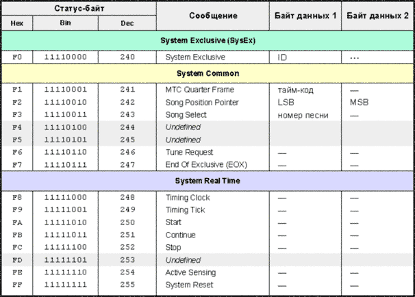
К общесистемной категории (System Common) относятся пять разнородных сообщений. Первое из них, MTC Quarter Frame, появилось в спецификации в 1987 году вместе с первым расширением протокола (MIDI Time Code). Последующие расширения MIDI стали кодироваться в группе SysEx. О другом общесистемном сообщении, Tune Request (статус-байт 0xF6), расскажу сразу же. Оно дает команду синтезатору произвести подстройку звуковых генераторов и, очевидно, имеет смысл только для старых аналоговых инструментов, у которых через некоторое время после включения начинает "съезжать" строй. Естественно, на это сообщение реагируют только те инструменты, у которых есть схема автоподстройки.
Сообщения категории Real Time имеют в MIDI наивысший приоритет, могут вклиниваться между частями других сообщений и состоят из одного статус-байта, без байтов данных. Они применяются для синхронизации и других задач, критичных ко времени.
Все три типа системных сообщений имеют общую черту — они относятся не к отдельному каналу, а ко всем устройствам MIDI-системы (впрочем, сообщения SysEx можно передавать избирательно, но об этом позже).
Синхронизация MIDI-устройств
До тех пор, пока MIDI-система состоит из синтезаторов, звуковых модулей и одного центра управления — секвенсора (программного или аппаратного), вопрос о синхронизации не стоит. И действительно, что тут и с чем синхронизировать? Секвенсор сам себе хозяин, работает от внутренних часов и при нажатии кнопки Play передает устройствам команды управления.
Другое дело, когда в системе появляется источник звука, содержащий встроенный секвенсор (на языке MIDI-спецификации — Rhythm Unit). Чаще всего это ритм-машинка, иногда — рабочая станция, то есть синтезатор с секвенсором в одном корпусе. Эти устройства можно использовать просто как источники звука, записывая всю управляющую информацию в основной секвенсор. Но иногда их собственный секвенсор и записывающие/ воспроизводящие возможности приходятся очень кстати.
Например, можно "набросать" паттерн в ритм-машинке, запустить его на воспроизведение, а на клавиатуре подбирать партию баса, записывая ее в основной секвенсор. Тонкостей этого процесса мы коснемся позже, в статье про организацию MIDI-систем, но уже ясно: в системе одновременно работают два секвенсора, то есть два устройства, имеющие внутренние часы. Нужно сделать так, чтобы устройства стартовали одновременно и работали в одном темпе, то есть синхронизировать их. Очевидно, одни из часов придется выключить, а вторые сделать общими. Иначе говоря, одно из устройств будет мастером (ведущим), генерирующим сигналы "точного времени", а другое — подчиненным (ведомым), слушающим эти сигналы и работающим с мастером "в такт".
Задолго до появления MIDI применялся сигнал, который представлял собой последовательность обычных импульсов. Они передавались определенное число раз за четвертную ноту, например, 48 или 96. Так как музыкальные длительности относительны, то эти импульсы давали не абсолютное (в минутах и секундах), а относительное время. При повышении темпа частота следования импульсов повышалась, при понижении — понижалась. Этого достаточно, чтобы секвенсоры и ритм-машинки играли в одном темпе, абсолютное время им и не важно. Все бы хорошо, но в разных устройствах применялись разные частоты следования импульсов, поэтому иногда требовались дополнительные преобразователи.
Проблема иного рода состоит в синхронизации секвенсоров и ритм-машинок с магнитофонами. Последние представляют собой устройства другой природы, где скорость движения ленты от темпа произведения не зависит. Непосредственно записать импульсы синхронизации на ленту нельзя, поэтому применяется один из двух методов: FSK-преобразование или таймкод SMPTE. Использование FSK будет рассмотрено в статье про построение MIDI-систем. Что же касается SMPTE, то на его базе был разработан протокол MIDI Time Code (MTC), который сегодня является основным при синхронизации секвенсоров с магнитофонами и другим звуковым оборудованием. Но MIDI Time Code — это уже расширение спецификации, поэтому о нем поговорим чуть позже. А сначала остановимся на "родном" методе синхронизации MIDI-устройств, который называется MIDI Clock и является неотъемлемой частью протокола.
MIDI Clock
MIDI Clock предназначен для синхронизации тех устройств, внутренняя временная сетка которых выражена в относительных единицах, зависящих от темпа. Типичные варианты: секвенсор и ритм-машинка, два секвенсора, две ритм-машинки. Для синхронизации одно из устройств делается мастером (у него включается функция передачи сообщений MIDI Clock), а другое — подчиненным (переводится в режим внешней синхронизации, который может иметь название "Sync: External Clock", "Sync: MIDI", "Clock: External" и т. п.). В принципе, ведомых устройств может быть несколько.
При этом не требуются специальные разъемы и кабели — сообщения MIDI Clock передаются по обычному MIDI-кабелю и разъему. Причем их вполне можно передавать и одновременно с аранжировкой. Здесь прослеживается аналогия с цифровой звуковой коммутацией, когда синхросигнал внедряется в звуковые данные (self-clock). С инженерной точки зрения это нехорошо, поскольку пропускная способность MIDI и без того ограничена. Но для пользователя удобно — не нужно лишней коммутации и обязательного наличия свободного MIDI-входа (рис. 2).
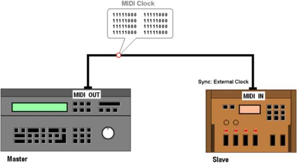
Для синхронизации по MIDI Clock применяются пять сообщений: позиционное (Song Position Pointer), информация о скорости (Timing Clock) и три команды (Start, Stop, Continue). Позиционное сообщение относится к категории System Common, информация о скорости и команды — к категории Real Time.
Основное сообщение здесь — Timing Clock. Оно состоит только из статус-байта (0xF8) и посылается мастер-устройством 24 раза за четверть. Если, например, текущий темп равен 120 bpm (ударам в минуту), то генерируются 48 сообщений Timing Clock в секунду (120 / 60 * 24), если 180 bpm — 72 сообщения. Поскольку Timing Clock никакой числовой информации не несет, то для определения темпа приемное устройство должно получить как минимум два "клока" и измерить временной интервал между ними.
Известно, что разрешение секвенсоров гораздо больше, чем 24 импульса в четверти (у современных программных секвенсоров оно доходит до 15360 PPQN — Pulse Per Quarter Note). При передаче клока ведомому устройству секвенсор вынужден отбрасывать часть своих внутренних импульсов высокого разрешения. Приемное устройство также может иметь более высокое разрешение, и должно будет добавлять внутренние импульсы между приходящими клоками. Возможна ситуация, когда в мастер-устройстве произойдет плавное изменение темпа в промежутке между MIDI-клоками. Точно его передать на ведомое устройство не получится — в ведомом произойдет скачок темпа (рис. 3). Обычно это не представляет особой проблемы, но лучше такое ограничение иметь в виду.
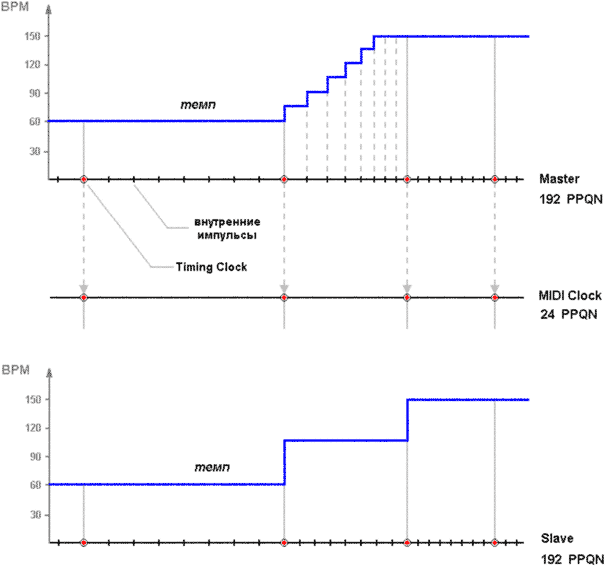
Сообщения Timing Clock, как и все сообщения группы Real Time, могут вклиниваться между частями других сообщений, если подошло время отправки. Типичный пример представлен на рис. 4. Здесь первый клок внедрился между статус-байтом сообщения Note On и байтом данных, а следующий — между байтами данных сообщения Pitch Wheel Change. Устройство должно обрабатывать эту ситуацию без проблем. В данном случае после получения статус-байта "нажата клавиша" тон-генератор ждет два байта данных, первый — с номером ноты, второй — со скоростью нажатия (см. предыдущую статью). Но вместо этого он натыкается на статус-байт клока. Этот байт извлекается из потока, обрабатывается, а затем устройство продолжает ожидать два байта данных сообщения Note On, как ни в чем не бывало.
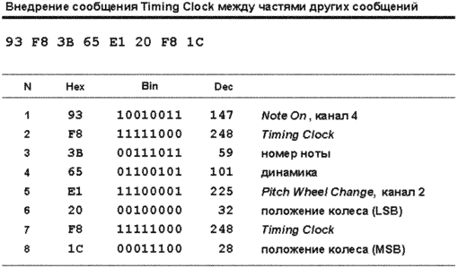
Спецификация предлагает еще один способ передачи информации о скорости — так называемые "тики" (Timing Tick). Один тик — это статус-байт 0xF9, который передается от мастера к ведомому устройству каждые 10 мс (то есть 100 раз в секунду). Скорость этого потока не зависит от темпа, но, с другой стороны, и не содержит абсолютного времени, как, например, в MTC. Ведомое устройство должно самостоятельно определить, сколько тиков приходится на четверть, базируясь на своих внутренних часах.
Теперь поговорим об управлении. При нажатии кнопки Play на мастере ведомому устройству посылается команда Start (статус-байт 0xFA), которая переводит его в режим готовности к воспроизведению. Одновременно эта команда выполняет простейшую позиционную функцию — она указывает, что воспроизведение должно начаться с самого начала песни. Затем, как только поступит первый клок, ведомое устройство должно начать воспроизведение. Спецификация не определяет паузу между поступлением сообщений Start и следующего за ним Timing Clock. Теоретически, клок может прийти немедленно. Но на практике большинство мастер-устройств выдерживают паузу в 1 мс для того, чтобы приемник мог подготовиться к воспроизведению.
Замечу, что требование ожидать первый клок действует только в том случае, если устройство находится в режиме внешней синхронизации, то есть является ведомым. Если устройство работает от внутренних часов, то оно может стартовать при получении сообщения Start немедленно, что удобно для простого дистанционного управления.
Команда Stop (статус-байт 0xFC) останавливает воспроизведение. Спецификация требует, чтобы сигналы MIDI Clock продолжали поступать и после остановки, что дает возможность ведомому устройству постоянно отслеживать текущий темп (например, для отображения его на передней панели).
Сообщения Timing Clock несут информацию только о скорости и ничего не говорят о положении. Команда Start немногим улучшает дело — она говорит лишь о том, что воспроизведение нужно всегда начинать с первой доли первого такта. А если нужно начать воспроизведение с произвольного места? Для этого применяется сообщение Song Position Pointer (SPP, статус-байт 0xF2), в котором посылается число MIDI-битов (MIDI Beat), прошедших от начала песни. Один MIDI-бит равен шести клокам, а, следовательно, шестнадцатой ноте (24 / 4). То есть SPP имеет точность позиционирования до шестнадцатой. Если, к примеру, SPP равен 48, то это значит, что воспроизведение начнется с 48-й по счету шестнадцатой, то есть с первой четверти третьего такта (при размере 4/4). Сообщение SPP имеет высокое разрешение, содержит два байта данных (пара MSB:LSB), следовательно, позволяет указать позицию от 0 до 16383 MIDI-битов, что при размере 4/4 соответствует 1024 тактам от начала песни.
Сообщение SPP не должно передаваться во время воспроизведения. В противном случае ведомое устройство может не успеть вовремя переместиться к новой точке и потеряет при этом несколько сообщений Timing Clock. Обычно SPP передается при перемотке вперед или назад в секвенсоре при остановленном воспроизведении.
Для того, чтобы ведомое устройство стартовало с точки, заданной сообщением SPP, либо от последней точки остановки, применяется команда Continue (статус-байт 0xFB). При ее получении устройство приводится в режим готовности, а следующее сообщение Timing Clock служит сигналом начать воспроизведение. Команда Start для этих целей не подходит, поскольку она требует всегда начинать воспроизведение с начала песни.
Существует также возможность выбора песни (или паттерна) посредством MIDI. Для этого применяется сообщение Song Select (категория System Common, статус-байт 0xF3). Оно содержит один байт данных — номер песни (от 0 до 127). Вы можете, например, запрограммировать в секвенсоре и в ритм-машинке несколько песен. Если секвенсор является мастером, то при выборе одной из них секвенсор посылает ритм-машинке сообщение Song Select — и она готова к воспроизведению песни с тем же номером. При получении Song Select ведомое устройство устанавливает позицию воспроизведения в начало песни. Для выбора другой позиции мастер-устройство, естественно, должно передать SPP.
|
MIDI Clock можно использовать и для переписывания данных из одного секвенсора в другой по кабелю, хотя существуют и более удобные способы (стандартные MIDI-файлы или протокол передачи MIDI File Dump, о котором поговорим отдельно). Однако в том случае, если одно из устройств не может читать или записывать на носитель, или не понимает протокола MIDI File Dump, запись по кабелю в реальном времени — единственный способ переноса данных. Коммутация здесь происходит обычным образом, как и при синхронизации секвенсора с ритм-машинкой (рис. 2). Секвенсор, с которого нужно переписать данные, делается мастером, секвенсор назначения — ведомым. При этом, для экономии времени, можно переписывать на повышенной скорости, выставив на мастере более высокий темп, а после записи вернув его в норму. Подробностей этого процесса я коснусь в статье про секвенсоры. |
System Exclusive
Существует множество самых разных музыкальных устройств, отличающихся назначением и внутренней архитектурой. Учесть особенность каждого инструмента и внести их в стандарт — задача нереальная, но MIDI к этому и не стремится. Стандартизированы (в виде сообщений канала) только наиболее характерные черты большинства устройств. Необходимая гибкость в управлении достигается с помощью контроллеров General Purpose или незарегистрированных параметров (NRPN, см. предыдущую статью). А наиболее удобным вариантом, позволяющим использовать все заложенные в устройство возможности, являются системные эксклюзивные сообщения (SysEx). Каждый производитель может определять свои собственные сообщения SysEx, даже под конкретное устройство.
Изначально сообщения SysEx предназначались исключительно для производителей, но скоро обнаружилось, что есть целая группа команд, которые используются одинаковым образом и которые неплохо бы внести в стандарт. Типичным примером является общая громкость звучания (Master Volume) и панорама (Master Pan). Кроме того, возникла потребность расширения начальной спецификации дополнительными протоколами (первое такое расширение, MIDI Time Code, появилось в 1987 году). Но практически все статус-байты на тот момент были заняты, поэтому единственным способом расширения оказались сообщения SysEx.
Таким образом, эксклюзивные сообщения были разделены на два типа: предназначенные для производителей (Manufacturer Specific SysEx) и универсальные (Universal SysEx). В последнюю группу вошли все расширения протокола, а также общие команды для управления устройствами, не отраженные в голосовых сообщениях.
Для того, чтобы сопоставить SysEx с конкретным производителем, в заголовке сообщения передается идентификатор производителя (Manufacturer ID). Получив чужой идентификатор, устройство обычно пропускает все сообщение, так как просто не понимает его формат. Выдачей идентификаторов занимаются организации MMA и JMSC.
Общая структура сообщения SysEx такова: сначала идет статус-байт 0xF0, затем идентификатор производителя, затем какое-то количество байт данных, и признак завершения — байт EOX (End Of Exclusive, 0xF7), рис. 5. Каждый производитель применяет собственный формат и волен использовать в сообщении любое число байт данных. В принципе, устройство, для которого предназначено сообщение SysEx, само знает, сколько байт данных содержится в том или ином сообщении. Поэтому EOX нужен, в основном, для тех устройств, которые получили порцию SysEx, им не предназначенную; количество байт данных им неизвестно, поэтому они и ориентируются по ограничивающему байту EOX.
С другой стороны, сообщение SysEx содержит только байты данных (не считая начального 0xF0), поэтому появление какого-либо статус-байта (отличного от категории Real Time) будет также означать конец SysEx. Так что, строго говоря, завершающий байт EOX не обязателен. Такой подход иногда встречаются в продукции некоторых фирм. Например, инструмент Yamaha DX 7 не передает EOX, поэтому с теми устройствами, которые ожидают его в обязательном порядке, могут возникнуть проблемы.
Идентификаторы производителей находятся в диапазоне от 0x01 до 0x7C (от 1 до 124), по 31 идентификатору на регион мира: с 0x01 по 0x1F — для американских производителей, с 0x20 по 0x3F — для европейских, с 0x40 по 0x5F — для японских и с 0x60 по 0x7C — для производителей из остальных регионов. Оставшиеся три значения (0x7D, 0x7E и 0x7F) зарезервированы: 0x7D является некоммерческим идентификатором (Non-Commercial ID), применяется при разработке и тестировании оборудования и не должен использоваться в устройствах, поставляемых на рынок. Группу универсальных сообщений SysEx поделили на две части: Universal Non-Real Time (сообщения, не критичные к времени передачи) и Universal Real Time (соответственно, критичные). Первой присвоили идентификатор 0x7E, второй — 0x7F.
Конечно, 31 производитель на регион — это несерьезно, и практически сразу все идентификаторы были заняты. Организации MMA и JMSC это предвидели и зарезервировали нулевой идентификатор (0x00) в качестве префикса, за которым передаются два байта, пара MSB:LSB, содержащие расширенный номер производителя, от 1 до 16383 (первым передается LSB). Сказанное иллюстрирует рисунок 6.
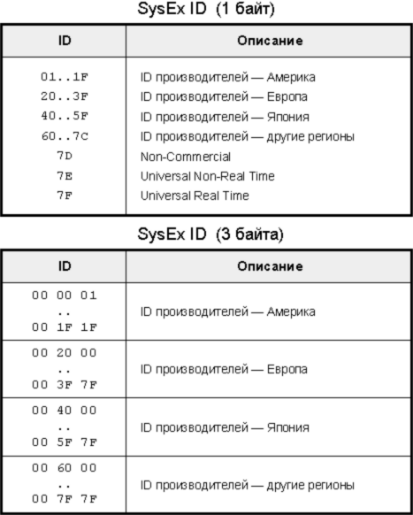
В таблице 1 приведены идентификаторы по состоянию на сегодняшний день. Политика MMA и JMSC такова: выделенные однажды идентификаторы остаются за производителем навсегда, даже если он прекращает торговую деятельность или ликвидируется. Что вполне логично, поскольку выпущенные приборы могут быть "в ходу" неограниченное время. В таблице несуществующие сегодня производители отмечены звездочкой.
Таблица 1
|
Америка
Европа
Япония
|
Естественно, идентификатор с номером 1 имеет Sequential Circuits как один из основных разработчиков MIDI. Интересно, что такой же номер, но в трехбайтовом виде (0x00, 0x00, 0x01) имеет фирма Warner New Media, то есть однобайтовые и трехбайтовые идентификаторы не перекрываются. Еще один интересный пример совпадения — Roland (0x41) и Microsoft (0x00, 0x00, 0x41).
Эксклюзивные сообщения (как и все системные) посылаются без указания номера канала, и на них может реагировать каждое устройство MIDI-системы. При соединении устройств разных производителей и передаче специфических SysEx это не проблема — SysEx с чужим идентификатором будут игнорироваться. Другое дело — универсальные SysEx. На них реагируют все устройства, поэтому для передачи такого сообщения выборочно, одному устройству системы, нужны дополнительные меры.
Был введен так называемый номер устройства в системе (Device ID) — байт данных, следующий за идентификатором производителя. Каждому устройству можно назначить свой номер от 0 до 127 (обычно, покопавшись в настройках). Если в сообщении SysEx будет передан Device ID, не совпадающий с выбранным номером, устройство проигнорирует сообщение. Очень похоже на прием по одному MIDI-каналу, только каналов здесь целых 128. Для посылки широковещательных SysEx-сообщений (то есть предназначенных всем устройствам системы) используется Device ID с номером 127 (0x7F).
Есть три способа передачи сообщений SysEx. Первый — прямая передача, которая инициируется вручную на передающем устройстве. При этом достаточно односторонней связи, то есть соединения MIDI-выхода передатчика с MIDI-входом приемника. Для контроля успешного приема в конец сообщения может добавляться контрольная сумма, рассчитанная по определенному алгоритму на основании данных сообщения. Если приемное устройство знает этот алгоритм, оно всегда может проверить целостность посылки.
Второй способ состоит в том, что приемное устройство сначала посылает запрос передающему, а затем ожидает от него данные. При этом требуется взаимная коммутация устройств двумя MIDI-кабелями. Третий способ также основан на запросе к передающему устройству и также требует двусторонней связи. При этом данные разбиваются на небольшие пакеты, которые могут передаваться без подтверждения приема или с подтверждением. В последнем случае используется так называемый механизм "рукопожатий" (Handshaking). После получения каждого пакета приемник должен сообщить передатчику результат — успешно получен пакет или нет. В случае ошибки приема, передатчик посылает пакет заново.
SysEx производителей
Сообщения SysEx производителей можно разделить на две основные группы: большие блоки данных (Bulk Dump) и изменения настроек инструмента (Parameter Changes). Сообщения Bulk Dump применяются для сохранения (и последующего восстановления) настроек отдельного пэтча или целых банков, обновления операционной системы устройства и других задач, требующих большого объема передаваемой информации. Сообщения типа Parameter Changes используются для настройки параметров встроенных процессоров эффектов, фильтров, паттернов арпеджиатора и т. п. На некоторых инструментах Yamaha, например, посредством таких сообщений можно управлять даже выключением питания.
Сообщения SysEx, как и все остальные, можно записывать в секвенсор. Проще всего это делать в реальном времени с помощью органов управления инструмента. При воспроизведении данные SysEx будут переданы обратно в тон-генератор, и все нужные установки параметров окажутся загруженными автоматически.
Существует целый класс компьютерных программ, которые называются редакторами MIDI-устройств. Они позволяют выполнить настройку инструмента удобным и наглядным способом — с помощью нарисованных на экране кнопок, слайдеров и других органов управления, а затем передать всю эту информацию для записи в секвенсор. Для сохранения, архивирования и последующей загрузки настроек пэтчей и целых банков применяются программы-библиотекари, которые часто выполняют и функции редакторов устройств.
Производителям рекомендовано публиковать формат своих сообщений SysEx, чтобы пользователи могли получить наибольшую отдачу от инструмента. Обычно формат прилагается к руководству пользователя. Другим производителям разрешается свободно его использовать, но только производитель-автор формата может вносить в него какие-либо изменения.
Обычно сообщение состоит из заголовка, команды, числа передаваемых байт, собственно данных и байта завершения EOX (рис. 7). Заголовок состоит из статус-байта 0xF0, идентификатора производителя и номера устройства в системе (Device ID). Многие производители используют также номер модели (Model ID) — ведь зачастую сообщение SysEx имеет смысл только для какого-либо конкретного прибора. Так, например, для звукового модуля Roland JV 1080 этот номер равен 0x6A. Если сообщение с таким номером поступит в другое устройство фирмы Roland (например, в автономную систему записи VS 2480), то оно будет проигнорировано.
|
|
|
|
|
|
|
|
|
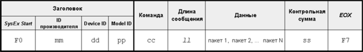 |
|
Число передаваемых байт указывается, как правило, только в том случае, если сообщение имеет переменную длину. Данные могут делиться на пакеты; общий их размер может колебаться от одного байта до нескольких килобайт. Перед завершающим байтом иногда передается контрольная сумма, алгоритм вычисления которой у каждого производителя свой. Ничего более конкретного сказать нельзя — сколько моделей, столько форматов. В качестве примера приведу команду копирования паттерна арпеджиатора из постоянной в перезаписываемую память в звуковом модуле Emu Proteus 2000 — рис. 8. |
|
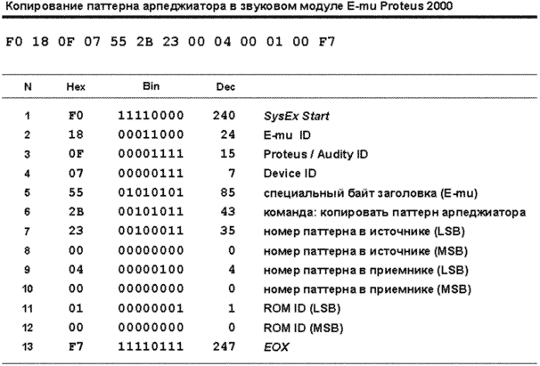 |
|
Универсальные SysEx |
|
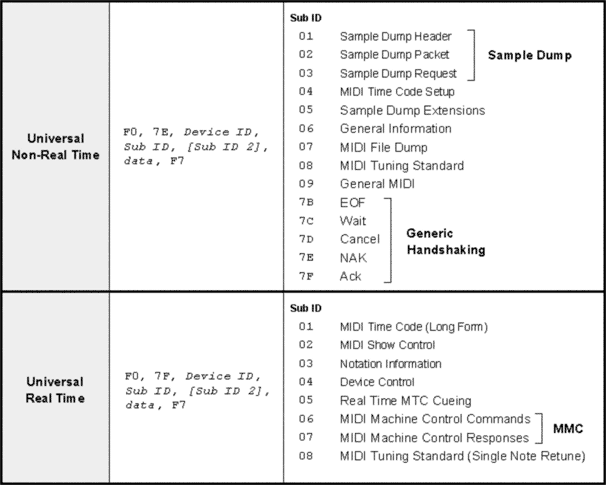 |
|
Расширения MIDI будут подробно рассмотрены в следующих статьях, а сейчас остановимся на универсальных категориях, к которым относятся Generic Handshaking, General Information и Device Control. Есть еще категория General MIDI, которая состоит из команд включения и выключения режима GM, но о ней поговорим в статье про совместимость. Сообщения категории Generic Handshaking используются при пересылке данных между устройствами, и отражают состояние передачи. Например, при ошибке приемник говорит передатчику "последний пакет прошел неудачно, давай-ка его еще раз". Естественно, при этом требуется двухстороннее соединение устройств. Сообщения Generic Handshaking могут включаться в SysEx, специфичные для производителей, либо использоваться в форме универсальных SysEx. Структура последних показана на рис. 10. В таком виде "рукопожатия" используются в протоколе Sample Dump Standard и MIDI File Dump (последний позволяет передавать файлы любого формата по MIDI-кабелю). |
|
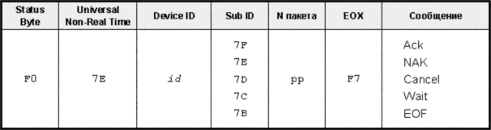 |
|
Сообщение Ack (Acknowledged, Sub ID равен 0x7F) посылается после успешного приема каждого пакета и говорит передатчику — "последний пакет принят, можно передавать следующий". Номер полученного пакета указывается перед байтом EOX. Сообщение NAK (Not Acknowledged, 0x7E) означает ошибку приема и требует повторной пересылки пакета. Если приемник хочет, чтобы передатчик прекратил посылать пакеты, он отправляет ему сообщение Cancel (0x7D). Сообщение Wait (0x7C) говорит передатчику "сделай паузу". Приемник посылает это сообщение, если ему нужно выполнить длительную операцию, например, сохранить полученную порцию данных на дискету. Как только операция будет завершена, приемник посылает одно из трех предыдущих сообщений: для пересылки следующего пакета, для повтора последнего, либо для отмены передачи. После отправки последнего пакета передатчик посылает приемнику сообщение EOF (End Of File, 0x7B). Категория General Information (иногда называемая Inquiry Messages) позволяет одному устройству (или программе) получить информацию о другом. Здесь прослеживается аналогия с принципом Plug’n’Play — интересующаяся сторона спрашивает: "Кто это к нам подключен?", устройство отвечает: "Я — такая-то модель такого-то производителя и т. п.". Команда опроса называется Identity Request (Sub ID 2 равен 0x01), команда ответа — Identity Reply (0x02). Пример команды опроса, которая посылается всем устройствам системы, показан на рис. 11. |
|
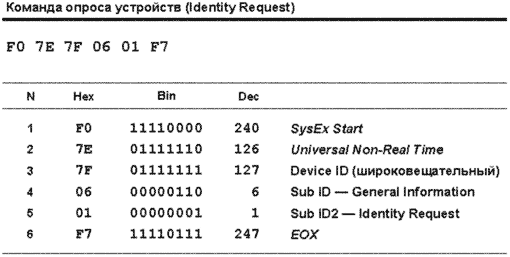 |
|
Структура ответа показана на рис. 12. По байту Device ID можно определить, с какого устройства системы пришел ответ. В ответе содержится идентификатор производителя, номер модельного ряда (family code), номер модели, а также версия операционной системы. |
|
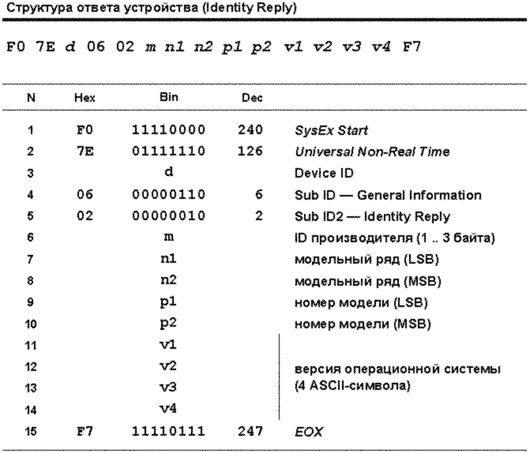 |
|
В основном команды опроса посылают программные редакторы/библиотекари, чтобы определить, с каким устройством им предстоит работать. Категория Device Control состоит из двух сообщений: Master Volume (Sub ID 2 равен 0x01) и Master Pan (0x02), оба появились в 1992 году. Предназначены они для управления громкостью и панорамой на мастер-выходе устройства, в отличие от сообщений MIDI Volume и Pan, которые применяются для настройки отдельного канала. Оба сообщения — высокой точности (содержат пару MSB:LSB). Пример использования Master Volume показан на рис. 13. |
|
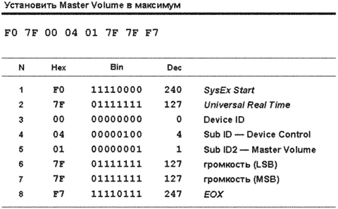 |
|
Running Status Суть его проста — если передается серия сообщений с одним и тем же статус-байтом, то достаточно передать только первый статус-байт, а остальные опустить. Проще всего показать это на примере. Если, скажем, передается сообщение о взятии ноты (предположим, на первом канале), то сначала к приемнику поступит статус-байт 0x90, а затем два байта данных: номер ноты и, соответственно, динамика. Затем приемник будет ожидать следующего сообщения, которое должно начаться со статус-байта. Если вместо него придет байт данных, то приемник поймет, что передача ведется в режиме Running Status и будет считать, что статус-байт все тот же, 0x90. Таким образом, неожиданно появившийся байт данных будет воспринят как номер ноты, а следующий за ним — как динамика. Пары байт "номер ноты/динамика" могут идти подряд до тех пор, пока тип сообщения не изменится. Для остальных сообщений принцип тот же. Какова эффективность Running Status? Если взять аккорд из пяти нот, то будут сгенерированы пять последовательных сообщений Note On, а по отпускании клавиш — столько же сообщений Note Off. В обычном режиме будет передано 30 байт, а при использовании Running Status — 22, то есть сжатие составит около 30% (рис. 14). |
|
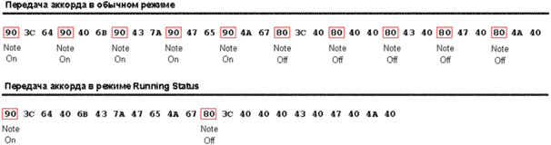 |
|
Однако чаще при исполнении одни клавиши нажимаются, другие в это время удерживаются, и отпускаются потом в разное время, то есть сообщения Note On и Note Off перемешиваются друг с другом. В этом случае Running Status неэффективен, так как длинные серии одинаковых сообщений отсутствуют. Но разработчики нашли выход и ввели правило: вместо сообщения о снятии ноты можно передавать сообщение Note On с нулевой динамикой, которое должно отрабатываться устройством аналогично. Предположим, мы взяли поочередно ноты До, Ми, Соль и Си первой октавы. В этом случае сообщения Note On и Note Off чередуются. Если инструмент будет передавать сообщение Note Off обычным способом, то пользы от Running Status не будет никакой — на выход пойдут 24 байта (рис. 15, а). Если же вместо Note Off передавать Note On с нулевой динамикой, то достаточно передать статус-байт Note On один раз в начале серии, в результате получим 17 байт (рис.15, б), то есть также около 30% сжатия. |
|
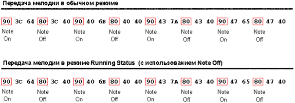 |
|
|
|
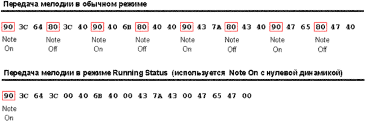 |
|
Режим Running Status применяется только при передаче голосовых сообщений и сообщений режима канала. Он очень хорошо справляется с потоком сообщений непрерывных контроллеров, таких как колесо модуляции и послекасание, но практически неэффективен для чередующихся сообщений разного типа. Если сообщения одного типа чередуются по разным каналам, их статус-байты отличаются, а, следовательно, эффективность сжатия потока также уменьшается. Общесистемные и эксклюзивные сообщения в режиме Running Status не передаются, поэтому при их появлении в потоке текущий Running Status сбрасывается. Сообщения категории Real Time, напротив, обрабатываются "прозрачно" и на Running Status не влияют. Режим Running Status обычно не требует каких-либо телодвижений от пользователя — он используется по умолчанию во всех современных MIDI-устройствах. Однако некоторые старые инструменты (например, Ensoniq Mirage, Korg DDD 1 и DDD 5, Sequential Circuits Prophet T 8, ранние Yamaha DX 7) его не поддерживают. Поэтому хороший секвенсор должен позволять включать и отключать Running Status, чтобы можно было работать и со старым оборудованием. Возможен и побочный эффект: если подключить приемное устройство к источнику, уже начавшему передачу в режиме Running Status, то приемник может вообще не получить ни одного статус-байта. А, следовательно, вся серия байт данных будет проигнорирована. Состояние канала передачи В MIDI предусмотрено специальное сообщение, которое позволяет инструменту самому определить целостность соединения, и в случае ее нарушения автоматически отключить звучащие ноты. Сообщение называется Active Sensing (категория Real Time, статус-байт 0xFE). Идея, в общем, простая, и основана на механизме тайм-аута. Передающее устройство посылает сообщения приемнику в обычном порядке. Как только пауза между сообщениями достигает 270 мс (ну, музыкант не играет ничего), передатчик начинает "нервничать" и посылает приемнику сигнал Active Sensing, как бы говоря: "Я в порядке, просто пока передавать нечего". Если в течение следующих 270 мс музыкант так и не притронулся к клавиатуре, передатчик снова посылает сигнал Active Sensing, и так до тех пор, пока не появятся сообщения для передачи. Приемник, получив первое сообщение Active Sensing, включает таймер. Если в течение 330 мс пришло следующее сообщение Active Sensing, то все хорошо, связь в порядке. Если пришло другое сообщение — тем более. Но если с момента последнего сигнала Active Sensing прошло более 330 мс, а никаких новых сообщений нет, то приемник считает, что соединение нарушено, и автоматически отрабатывает команды выключения нот и сброса контроллеров. Подытожу: сообщение Active Sensing посылается передатчиком, когда на MIDI-шине нет активности в течение 270 мс. До первого получения этого сообщения приемник работает в обычном режиме, после — в режиме слежения за потоком. Как только появляются другие сообщения, режим слежения отключается. На следующей диаграмме (рис. 16) показана логика работы приемника. Будем считать, что таймер приемника отсчитывает тики каждую миллисекунду. Значение регистра TO (Time Out) увеличивается при каждом тике на единицу, а бит (AS Flag) в одном из регистров состояния служит флагом — включен режим слежения или нет. |
|
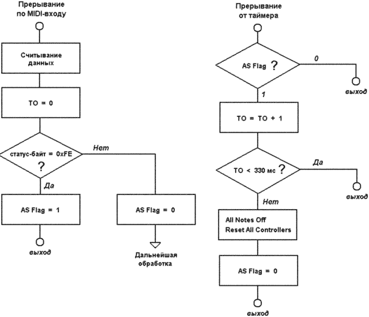 |
|
Несмотря на то, что Active Sensing — простейшее (и, видимо, не такое уж сложное в реализации) средство контроля, многие устройства на него не реагируют. Секвенсоры это сообщение не записывают. Особенности приема Так, если пришел статус-байт, который определен в спецификации, но не реализован в устройстве, он должен быть проигнорирован без всяких последствий (нарушения внутренней логики). Например, если устройство не реагирует на Active Sensing, то это сообщение не должно прерывать логику работы Running Status. Такой принцип позволяет соединять устройства разных возможностей и разного ценового диапазона в одну сеть без проблем. Неопределенные в протоколе статус-байты (например, 0xF4, 0xF5) должны игнорироваться вместе со всеми их байтами данных. То же самое относится к неопределенным в протоколе (или не реализованным в устройстве) сообщениям канала. Для каждого статус-байта должно быть передано строго определенное число байтов данных (за исключением сообщений SysEx, специфичных для производителей). Приемник ожидает прихода всех байтов данных сообщения и только после этого может как-то на сообщение реагировать. Если статус-байт пришел раньше, чем положено, то есть предыдущее сообщение было неполным, оно отбрасывается, а новое принимается к обработке. Приемник должен игнорировать байты данных, которые не были предварительно снабжены статус-байтом (это не относится к приему в режиме Running Status). Сообщения категории Real Time должны "аккуратно" извлекаться из потока и не влиять на прочую логику обработки. Если эти сообщения приходят в устройство, не содержащее секвенсор, то они игнорируются, так же, как и сообщения Song Position Pointer / Song Select (но, естественно, передаются на сквозной выход прибора в виде копии необработанного входного потока). Включение питания и инициализация В момент включения питания должна быть исключена передача случайных данных на выход устройства, а все поступающие на вход сообщения (кроме Note On/Note Off) должны быть проигнорированы. Предусмотрено также сообщение глобальной инициализации (сброса) — System Reset (категория Real Time, статус-байт 0xFF). Оно дает команду устройству перейти в то состояние, которое было после включения питания. То есть гасятся все звучащие ноты, секвенсор (если он есть) останавливает воспроизведение и переходит к началу песни, включается локальное управление (Local Control On), сбрасывается текущий Running Status, устройство переходит в какой-либо из начальных MIDI-режимов. Кроме того, все настройки инструмента, которые не были сохранены в постоянной памяти, стираются. Одним словом, это сообщение — довольно жесткий аналог кнопки "паника". Время его отрабатывания может быть довольно большим (особенно если происходит перезагрузка операционной системы инструмента). Спецификация требует, чтобы это сообщение посылалось только в том случае, если музыкант непосредственно нажимает кнопку сброса, и не посылалось автоматически (например, будучи записанным в секвенсор). MIDI изнутри |
|
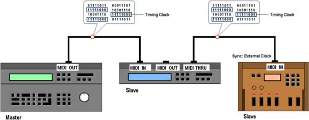 |
|
В секвенсоре записаны партии баса и электропиано, первая — на канале 4, вторая — на канале 7. В партии баса используется звуковысотное колесо, в партии электропиано — послекасание. В ритм-машинке, соответственно, запрограммирована секция ударных. На рисунке 18 приведен возможный вариант MIDI-потока на выходе секвенсора в первую четверть композиции после нажатия кнопки Play. 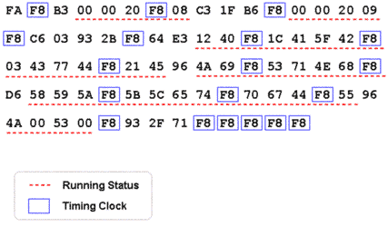 На этом мы завершаем обзор основной спецификации MIDI. В следующих статьях поговорим о расширениях — дополнительных протоколах в рамках основной спецификации. И начнем с самого первого — MIDI Time Code. |